5 фев, в 16:05
Разговор с прорабом
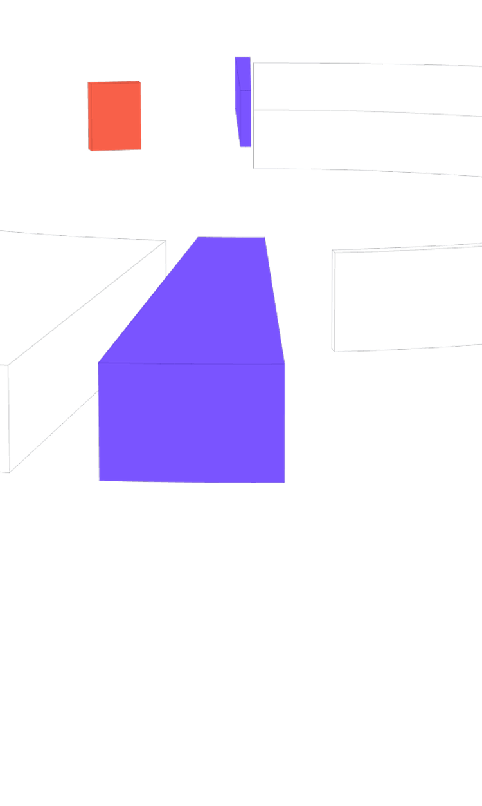
Оставайся
в разговоре
Уделяй внимание собеседникам, а не конспектированию встречи. Яндекс Пин сам зафиксирует и сохранит всё, что обсуждается
Итоги дня
В конце дня Алиса AI собирает общую картину: завершённые дела, новые задачи, обещания, важные моменты и приоритеты на завтра
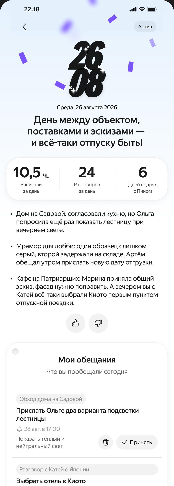
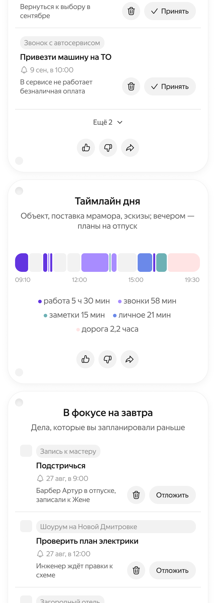
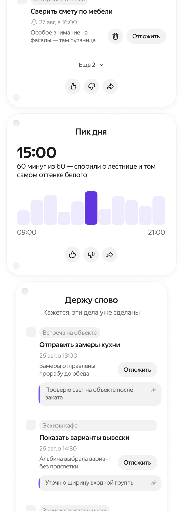
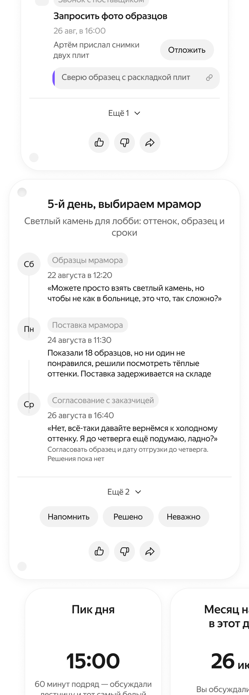
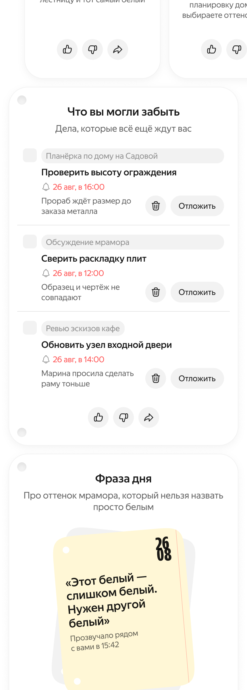
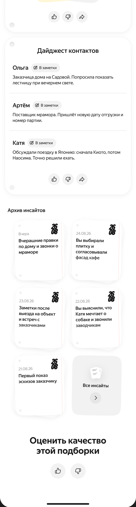
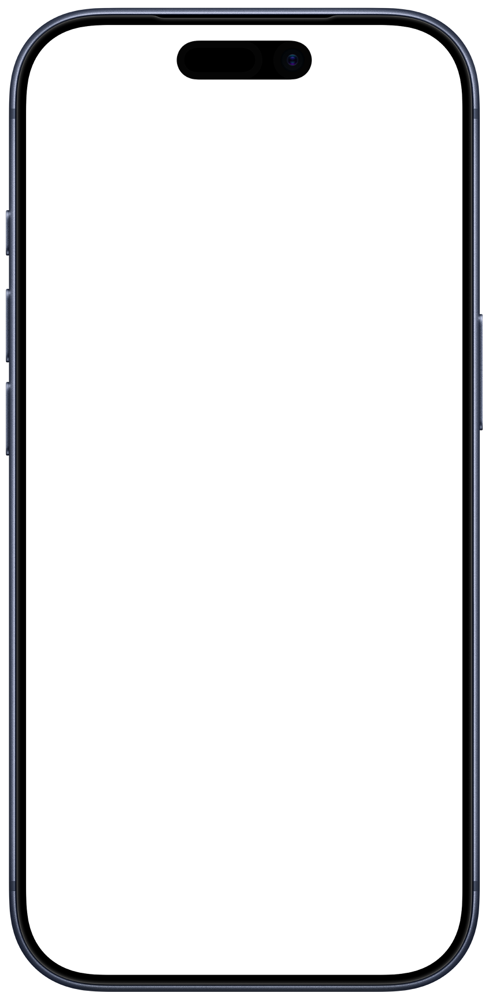
Встреча с заказчиком по коттеджу
Составить смету по объекту
Алиса AI определяет твой голос 1 и предлагает добавлять в Мою память то, что может оказаться важным: твои обещания, озвученные идеи, дела
Всё важное —
в Моей памяти
С помощью функции Моя память Алиса AI в Яндекс Пине запоминает множество самых разных фактов из твоих ежедневных обсуждений и разговоров
Яндекс Пин
Запоминает за тебя
Новое носимое ИИ-устройство с Алисой AI для работы и жизни
Влияй на то, каким будет девайс
Присоединяйся к бета-тестированию, чтобы получить эксклюзивный доступ к новым фичам и сценариям
Помогает
не потерять
важное
Нескончаемые рабочие встречи и обсуждения, случайные диалоги и дружеские беседы, обещания и планы, договорённости и задачи — Яндекс Пин собирает всё происходящее вокруг тебя
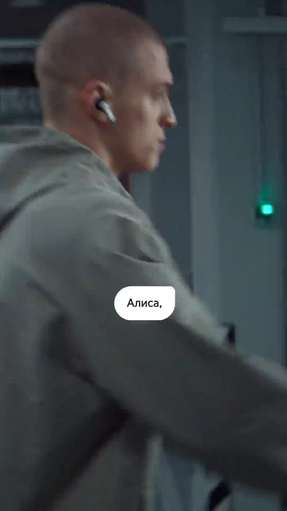
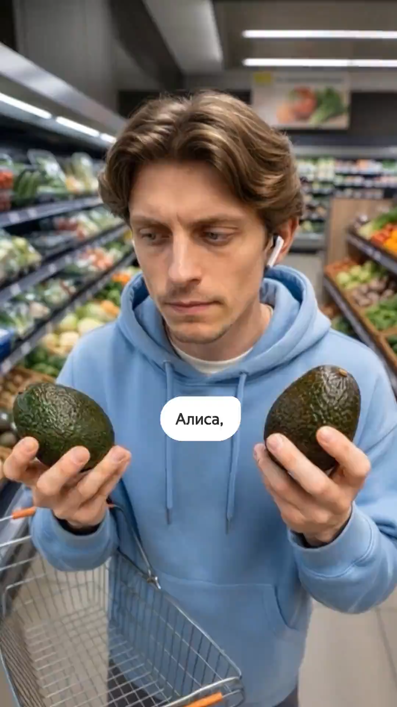
Носи не снимая
Надень утром, включи и носи весь день. Яндекс Пин будет фиксировать разговоры, а Алиса AI — разделять разные встречи по контексту или связывать части обсуждений в одну историю. Даже если беседа началась в лифте, а продолжилась в переговорке
XX
часов работы
от батареи
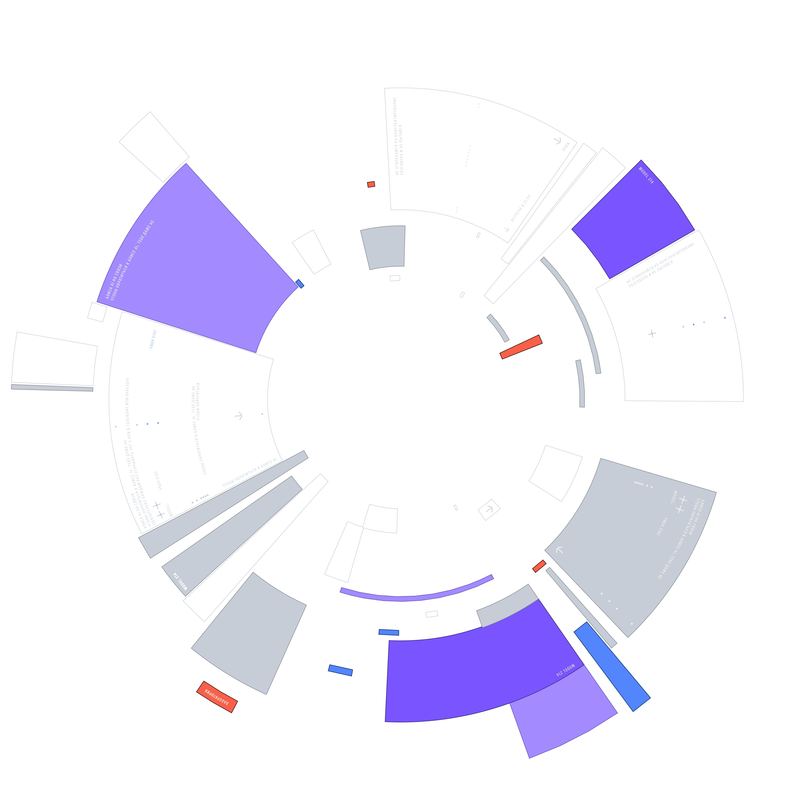
Чем больше используешь Яндекс Пин, тем глубже Алиса AI погружается в контекст твоих ежедневных забот и задач — и тем лучше понимает тебя, точнее и быстрее помогает тебе
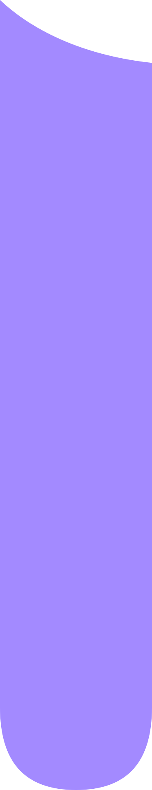
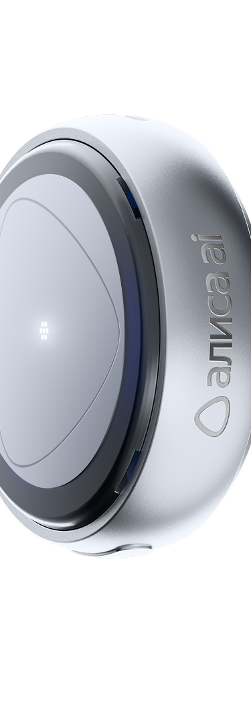
Алиса AI
твой напарник
Алиса AI помнит твои записи, задачи и разговоры — поэтому не нужно ничего объяснять заново, можно сразу перейти к делу.
Находит ответы
Алиса AI просмотрит связанные записи, расшифровки, итоги встреч, сохранённые факты и списки задач. Сопоставит разные разговоры, восстановит хронологию и соберёт ответ
Выполняет задачи
Через Яндекс Пин можно ставить Алисе AI задачи на ходу в специальном режиме Действуй — она учтёт весь собранный контекст и выполнит их
подробнее про режим Действуй
до
32
часов записи
без подключения
к телефону
Больше возможностей с подпиской
При покупке Яндекс Пина доступен пробный период Максимальной подписки на 3 месяца
Ювелирно
собран
Носи как удобно
Компактный размер и несколько вариантов крепления позволяют носить девайс разными способами: на шнурке на шее, на лацкане пиджака, на футболке или бейсболке
Дизайн
Лаконичный и стильный, Яндекс Пин идеально впишется в любой из твоих образов
Это
конфиденциально
Безопасность и конфиденциальность ИИ-пина поддерживается на нескольких уровнях
Ответы на вопросы
Оживите людей и портреты
Попросите человека улыбнуться,
подмигнуть, помахать рукой, обнять
другого человека
или начать танцевать
Добавьте движение
животным
Оживите природу
и предметы
Добавьте эффект или новый
сюжет
Измените движение камеры
Запоминает за тебя
пин
Три микрофона
Аналоговый микрофон определяет речь с помощью нейропроцессора. При её обнаружении включаются два цифровых микрофона, которые записывают звук и создают карточку встречи.
Основной процессор
Передаёт речь в приложение для транскрибации и отвечает за Bluetooth-подключение к телефону.
Встроенная память
Сохраняет записи без подключения к телефону и передаёт их в приложение при восстановлении Bluetooth-соединения.
Модель
YNDX-00212
Габариты (диаметр × толщина)
34 × 12 мм
Масса нетто
≈ 16 г
Беспроводная связь
Bluetooth® 5.4
Питание (зарядная станция)
5 В ⎓, 0,5 A Max
Энергопотребление
Не более 2,5 Вт
Ёмкость аккумулятора
210 мАч (номинальное напряжение — 3,78 В)
Микрофоны
3 шт.
Крепления
Клипса, магнитная подвеска, ланьярд
Влагозащита
Капли и брызги воды, без погружения
Встроенная память
До 32 часов записи без подключения к телефону